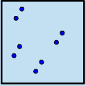

Gordon Moore was a brilliant engineer that helped create Intel, back
in the 1960s.
Intel is now one of the largest computer chip-making companies in the
world.
In 1965 he noticed that the number of transistors in a computer chip
was doubling roughly every two years, and predicted that it would
carry on. (He was right)
This prediction came to be knows as 'Moore's Law'.
Moore's Law
computer chip
Backward in time

Forward in time
Year: 1970
transistors count: 2,000